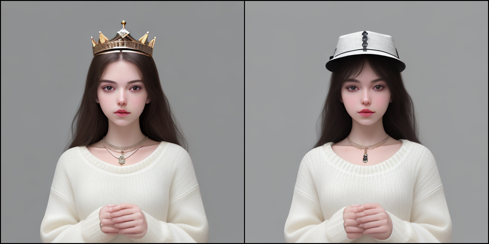

PeRFlow: Piecewise Rectified Flow as Universal Plug-and-Play Accelerator
PeRFlow: Piecewise Rectified Flow as Universal Plug-and-Play Accelerator
Gallery
8-step inference
4-step inference
Features
PeRFlow trains piecewise-linear flow models for fast sampling. These models can be initialized from pretrained diffusion models, such as Stable Diffusion (SD). The obtained weights of PeRFlow serve as a general speedup module which works compatibly with various finetuned stylized SD models as well as SD-based generation/editing pipelines. Specifically, \(\Delta W\) are computed by the flow model's weights minus the pretrained ones. One can fuse the PeRFlow-\(\Delta W\) into various SD pipelines for (conditional) image generation/editing with just few-step inference.
Video demos for real-time generation
Compatibility to SD pipelines
Wonder3D
PeRFlow accelerated Wonder3D for instant (one-step) multiview generation.
ControlNet - Tile
Here, we show the collaboration of PeRFlow and ControlNet-Tile for fast image enhancement. Given a low-res input (64x64), we can generate a high-res (1024x1024) image with rich details.ControlNet - Depth / Edge / Pose
Plug PeRFlow-\(\Delta W\) into other ControlNet pipelines.IP-Adapter FaceID


Prompt-to-prompt

a cat → a dog
eating steak → eating rice
a dog → a bull

with crown → with hat
Img2Img


Comparison with LCM
Better compatibility with finetuned SD models
PeRFlow shows a smaller gap to the oracle in terms of image quality, e.g., color-style and layout. It preserves the aesthetic effect of finetuned stylized models (vivid, proper brightness and contrast). PeRFlow also supports CFG and negative prompts. One can use the well-craft negative and positive prompts provided in various finetued stylized models to generate astonishing images.

Better sampling diversity


Consistency among results by various inference steps
Increasing sampling steps will improve the image quality. Given a random seed, PeRFlow generates results sharing the similar appearance, so that users can preview many candidates via 4-step inference, then choose few ones of interest for final high-quality generation. In contrast, the results of LCM via different inference steps may look very different.

Method
Rectified Flows proposes to construct flow-based generative models via linear interpolation, and the trajectories of the learned flow can be straightened with a special operation called reflow. However, the reflow procedure requires generating a synthetic dataset by simulating the entire pre-trained probability flow, which consumes a huge amount of storage and time, making it unfavorable for training large-scale foundation models. To address this limitation, we propose piecewise rectified flow. By dividing the pre-trained probability flows into multiple segments and straightening the intermediate probability flows inside each segment with reflow, we yield a piecewise linear probability flow that can be sampled within very few steps. This divide-and-conquer strategy successfully avoids the cumbersome simulation of the whole ODE trajectory, thereby allowing us to perform the piecewise reflow operation online in training.
| LAION5B-30k | SD-v1.5 | COCO2014-30k | ||||
|---|---|---|---|---|---|---|
| FID | 4-step | 8-step | 4-step | 8-step | 4-step | 8-step |
| PeRFlow | 9.74 | 8.62 | 9.46 | 5.05 | 11.31 | 14.16 |
| LCM | 15.38 | 19.21 | 15.63 | 21.19 | 23.49 | 29.63 |
Quantitative Results: We train a PeRFlow model on LAION-aesthetic-v2 data to accelerate SD-v1.5. We compare the FID with respect to three datasets, including (1) a subset of 30K images from LAION, (2) a set of 30K images generated from SD-v1.5 with the JourneyDB prompts, (3) the validation set of MS-COCO2014. For all these datasets, we generate 30K images with different models using the corresponding text prompts. The results are presented in the following table. PeRFlow has lower FIDs in all the three comparisons according to the numerical results.